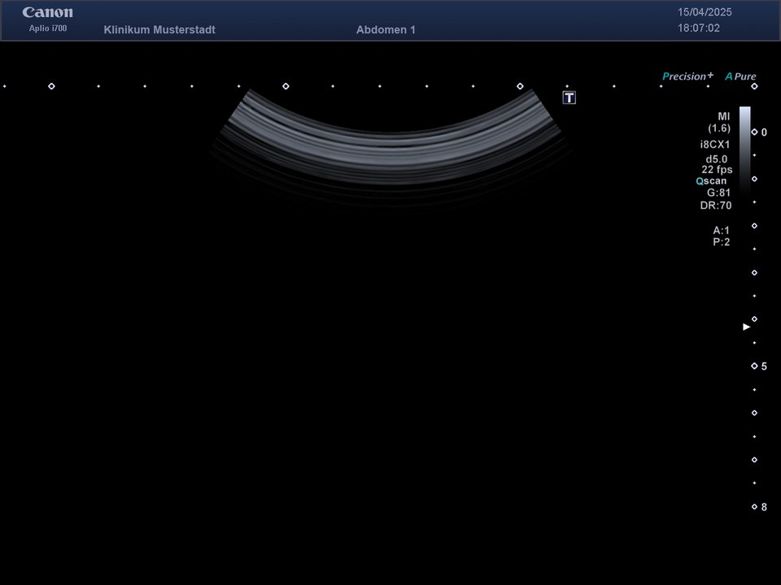
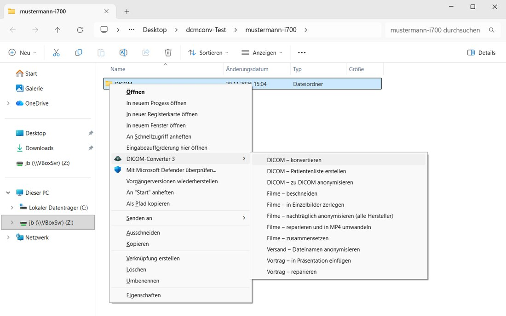
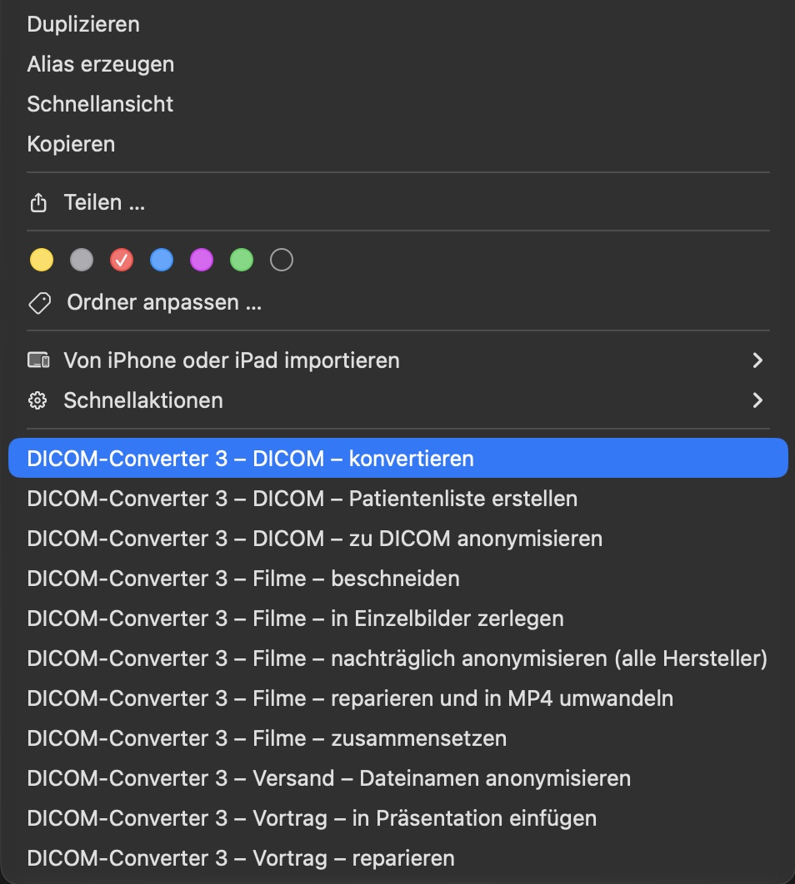
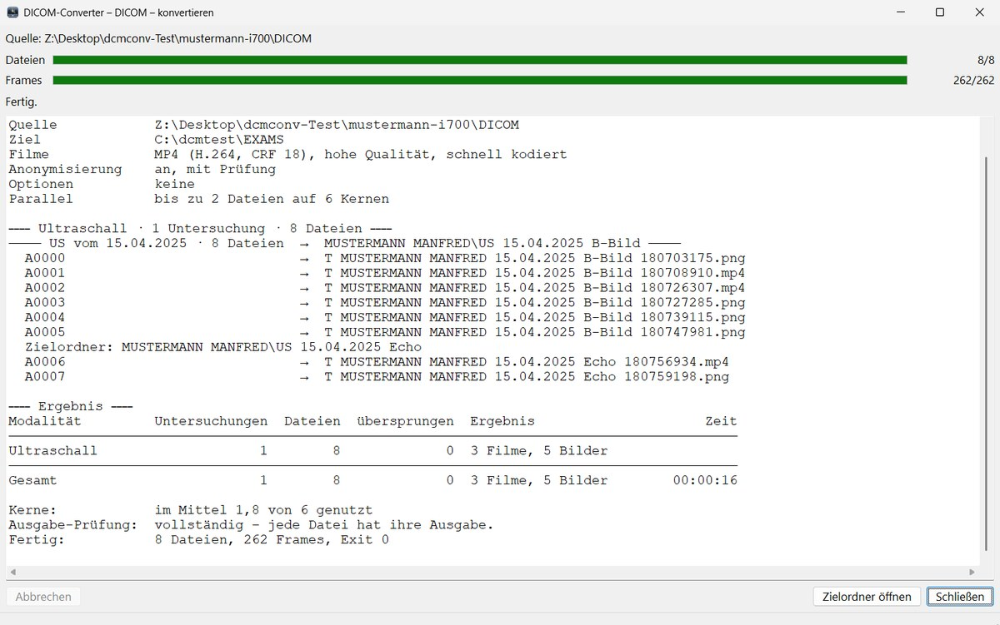
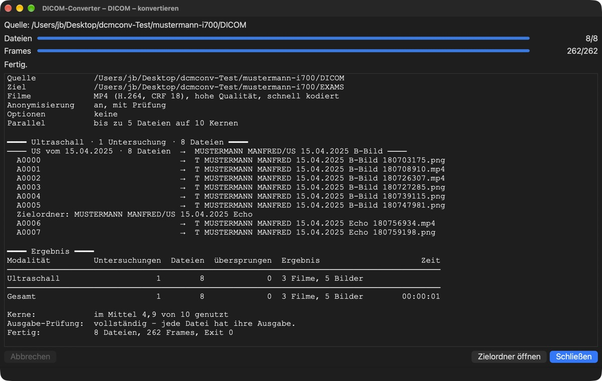
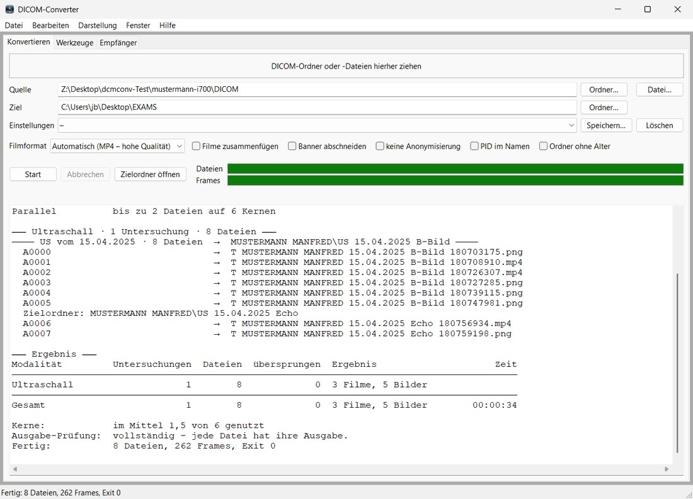
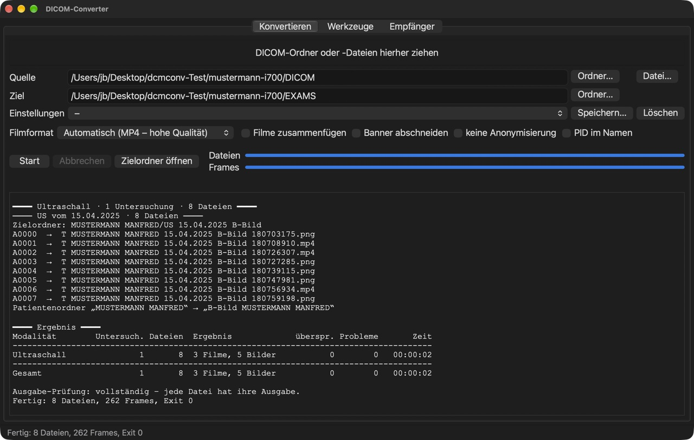
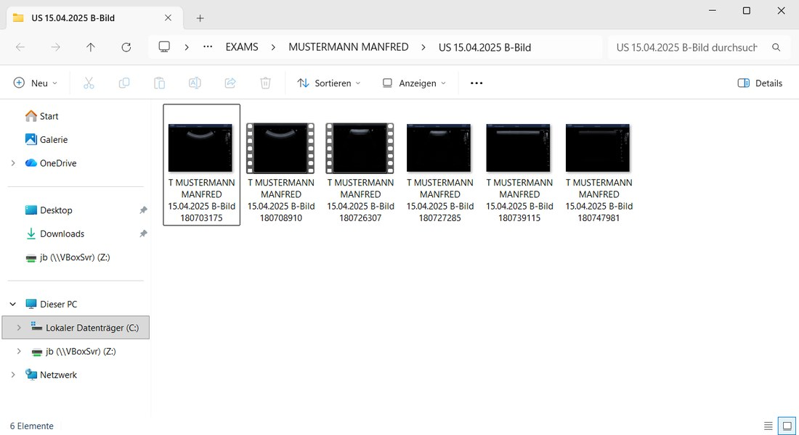
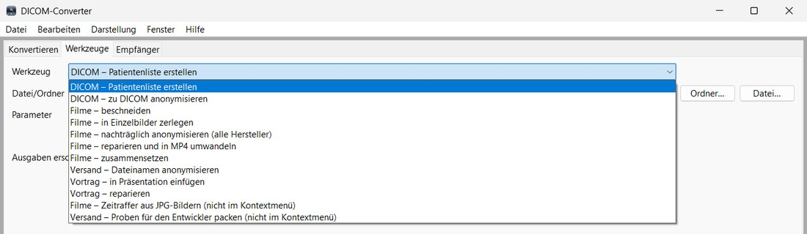
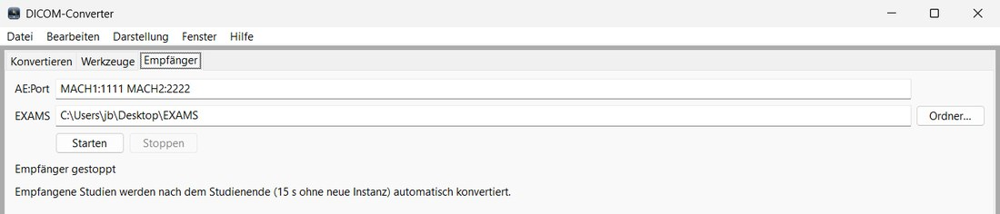

DE | EN
DICOM-Converter
Version 3.0.0.442 · as of 19.11.2026 · for macOS and Windows
The DICOM-Converter turns ultrasound examinations – and also CT, MRI, X-ray and other DICOM data – into ordinary movies and images that you can view with any program, put into PowerPoint or Keynote, or pass on – and for ultrasound it removes the name, patient ID and date of birth from the image.
New: much faster. The DICOM-Converter now works on several files at the same time, reads DICOM movies faster and encodes MP4 movies faster. In a test on a Mac, 212 ultrasound files were finished after 53 seconds instead of 6 minutes – same folders, same names, movies of the same size. You do not need to set anything. More about this
Download
Windows without administrator rights (e.g. a hospital PC managed by IT): ZIP version – unpack and start (how it works)
Mac with macOS 11 or later (Apple silicon and Intel), signed by Apple · Windows 10 or 11 (64-bit) · System requirements
Version 3.0.0.442 · What’s new compared with 2.0.8 (PDF)
New in the latest versions
Version 3.0.0.442 · 17.11.2026
- Lecture – repair: cover rectangles placed over the header by hand are removed as soon as the movie or image below is safely anonymized (Keynote and PowerPoint). The report names the slides; animated rectangles stay.
- GE LOGIQ, movies in 960x540 (export for lectures): the examiner initials before the name are now covered too.
- GE LOGIQ: screenshots with the overview of patient data (Secondary Capture, 1024/800 wide) are deliberately not converted – until now they went into the output without masks.
- Canon/Toshiba Aplio i800: screenshots of the patient list (1920x1080) are deliberately not converted – the log gives the reason, no sample is stored any more.
- Patient list: now a page in the browser, sorted by examination date. Clicking the folder opens it, “convert” converts the examination (after a confirmation), plus “convert all examinations”. New: patient ID, age, time, accession number, institution, images/movies separately and whether the examination has already been converted. PDF and CSV for Excel via buttons.
- Repair presentation: a cover rectangle now stays as soon as it also lies on an image that was not anonymized; in Keynote only the visible part of a cropped image counts (before, a rectangle over another image could be removed).
- GE LOGIQ, images in 960x690 (cut at the bottom, from lectures) are now anonymized.
- Repair presentation (Keynote): the report lists the items to look at with the reason on each line.
- Lecture – repair (Keynote): MP4, M4V and 3GP movies in Keynote presentations are now also checked and anonymized – until now only MOV movies were processed.
- Lecture – repair: GE images in 1552x873 (and other sizes with an odd pixel count) are now anonymized – until now they stayed unchanged with “Bildgröße geändert” (image size changed).
- Lecture – repair: movies and images from all ultrasound manufacturers are anonymized, no longer only Philips. A recognized device without matching masks is listed in the report under “Bitte ansehen” (please look).
- Anonymize movies afterwards: if a mask is dropped because it would hit the clinic name, the other words below it are covered one by one (the clinic name stays). Before, the patient name stayed visible there on some Philips images (CX50, 800x600).
- Anonymize movies afterwards: Toshiba/Canon images with the extension .tiff or .jpeg are no longer skipped.
- Terminal:
extract-examinerputs the matches into „zum Löschen“ in the source folder, like all tools. - Two different images taken in the same second no longer overwrite each other: the later one is called “…-2”. Before, one of them was silently lost.
- New: DICOM-Converter also speaks English – program window, context menu, questions and log, plus Quick Start Guide, Manual and website. Switch under View → Language / Sprache; without a choice the language follows the system. Folder and file names stay the same.
- New: **Review results** – outputs from devices without a fixed rule and hits of the anonymization check appear at the end of the run in a window of their own: the header line of the first image at actual size, with a green frame around what was covered and a red frame where something may still be legible. “Hold back” moves a file into the folder “zum Löschen”, “OK” keeps it. In the program window and with the context menu; later again via File → Review results …
- New for your own device rules:
dicomconverter rules suggestturns samples from a device without a rule (sample ZIP orunsupp_res) into a suggested rule – masks over name, date of birth and ID, cropping below the header line, plus a before/after image per device and a ready-made rule file forrules.d. Details in the manual, section 10.
Version 3.0.0.403 · 15.11.2026
- New: at startup the DICOM-Converter tells you when there is a new version, briefly shows what is new and, if you wish, installs it right away by itself – on the Mac after the administrator password, on Windows after the prompt for administrator rights; it then restarts. The check can be switched off under Hilfe (Help); “Nach neuer Version suchen …” (check for a new version) checks by hand at any time. Only visible from the next version on – this one is still available on the website as usual.
- Anonymization is now always checked: every finished image and every movie is searched for name, patient ID and date of birth by text recognition, and hits are reported at the end. The switch “Anonymisierung prüfen” (check anonymization) is gone. The check covers the header line, where the devices show this information – in the test with 212 ultrasound files the conversion took 70 instead of 50 seconds (the previous check of the whole image: almost 3 minutes).
Version 3.0.0.395 · 12.11.2026
- “Vortrag – reparieren” (repair presentation) instead of “Vortrag – Keynotes reparieren” – now also for PowerPoint, on Mac and Windows: movies in old formats (MJPEG, AVI, WMV) become MP4 and play everywhere in PowerPoint, the presentation usually becomes half the size; Philips movies and images are anonymized; old images that PowerPoint only shows as a white area are visible again in old .ppt files. The result is called “… (repariert)”, with a report next to it. Keynote presentations (Mac only) are repaired as before. If both kinds are in the folder, the Mac asks “Keynote oder PowerPoint?” as when inserting – the choice from last time is preselected.
- Old Keynote and PowerPoint presentations: poster frames of old movies (Cinepak, Indeo, DivX, QuickTime Animation, H.264) are visible again too, and the faint notice “Zur Anzeige wird der QuickTime™ Dekompressor … benötigt” (“QuickTime™ and a … decompressor are needed to see this picture”) in the middle of the image disappears.
- New: nuclear medicine (NM). Scintigrams are output dark on white (whole body anterior and posterior side by side, SPECT as a movie). Screen captures from Siemens Symbia and syngo.via show name, date of birth, patient ID, referring physician and order number in the image – this is covered, also with the output format DICOM; previously NM files were skipped.
Older versions
Version 3.0.0.392 · 11.11.2026
- Fixed: if there are text files, ZIP archives or similar between the DICOM files (e.g. a read-me file), the progress window no longer shows an incomprehensible message “E: DcmElement: Unknown Tag & Data …”. Such files are skipped as “keine DICOM-Datei” (not a DICOM file), as before.
Version 3.0.0.389 · 11.11.2026
- Even faster: MP4 movies are encoded with a faster setting – same size, a difference in the image is practically invisible. In the test with 212 ultrasound files 53 seconds instead of 1½ minutes (before 3.0.0.385: 6 minutes). Thorough as before: terminal
--encoding thorough. - “Filme – reparieren und in MP4 umwandeln” (repair and convert to MP4): HEVC movies in MOV (e.g. from the iPhone) are now repackaged into MP4 without loss instead of being re-encoded – they stay the same size and keep their quality. When repackaging, movies with sound are checked frame by frame for completeness like all others before the original is cleared away.
Version 3.0.0.385 · 11.11.2026
- Much faster: DICOM movies are read faster, and on computers with several cores several files are converted at the same time – in the test with 212 ultrasound files on a Mac with an Apple chip 1½ instead of 6 minutes. The results and the log are the same as before, frame for frame. One after the other as before: terminal
--jobs 1. - Fixed (Mac): “Vortrag – in Präsentation einfügen” (insert into presentation) aborted in the context menu since 3.0.0.364 with “Unbekanntes Token kann hier nicht verwendet werden” (unknown token cannot be used here). It now also remembers the choice Keynote/PowerPoint there, as in the program window.
- Windows: for PCs without administrator rights there is a ZIP version to unpack (on the website and in the release), with “Rechtsklick einrichten.cmd” for the context menu.
- Terminal:
transcode --askis now only available together with--all, i.e. with the same questions as “Filme – reparieren und in MP4 umwandeln”. Without questions,transcode --mjpeg-onlystill converts only the old MJPEG movies.
Version 3.0.0.373 · 10.11.2026
- Joining movies: if an examination has only one loop, it is no longer “joined” but stays a normal movie with the time in its name. Joined movies now mention “CEUS” or “B-Bild” only once in their name.
- “Vortrag – in Präsentation einfügen” (insert into presentation): for a new presentation there is a short list of themes – your own themes and templates, black with white text, white and (Keynote) all other themes. The choice from last time is preselected. On Windows the list replaces the previous yes/no question.
- Output check: if another tool (such as “nachträglich anonymisieren”, anonymize afterwards) edits files while the conversion is still running, the check reports this as “Inzwischen verändert” (changed in the meantime) with the new version instead of as an error. If a file really is missing, it says whether the folder or only the file is missing. Double-clicking such a line shows the source file.
- Fewer questions: cropping, repairing, anonymizing afterwards and repairing Keynotes ask only once about the originals, together with the overview – “In ‚zum Löschen‘ aufheben” (keep in “to be deleted”) or “Originale löschen” (delete originals), the last choice is preselected. Kept originals are collected in one folder “zum Löschen” in the chosen folder. The other questions also say on their buttons what will happen (“Als ZIP packen” / “Ohne ZIP” – pack as ZIP / without ZIP).
Version 3.0.0.368 · 09.11.2026
- Windows: in questions, longer button names such as “Zusammenfügen” (join) were cut off; the buttons now adapt to the text.
Version 3.0.0.364 · 09.11.2026
- New: “Filme – reparieren und in MP4 umwandeln” (repair and convert to MP4) replaces “Filme – reparieren” and “Filme – in MP4 umwandeln”. An overview states what does not play, what is in older formats and what is already fine. You can choose “Alles in MP4” (everything to MP4) – now for all formats (MOV, AVI, WMV, MPG, WebM …), not only old MJPEG movies – or “Nur reparieren” (repair only), where the format stays. Movies with sound are no longer skipped; the sound is kept.
- New in the context menu: “Filme – beschneiden” (crop) cuts off the header line with name and date from finished movies and images, including files straight from the device. Manufacturer and model are recognized per file as when anonymizing, so that devices with the same image size but headers of different heights are cropped correctly too.
- “DICOM – konvertieren” (convert) itself asks whether the loops of an examination should be joined into one movie – only if an examination has several loops of the same image size. The separate entry “mit Glue” is gone.
- “Vortrag – in Präsentation einfügen” (insert into presentation) replaces “… in Keynote einfügen” and “… in PowerPoint einfügen”: on the Mac it asks “Keynote oder PowerPoint?” (only if both are installed), on Windows it uses PowerPoint.
- For “Zusammenfügen oder einzeln lassen?” (join or keep separate?) and “Keynote oder PowerPoint?” the choice from last time is preselected.
- Originals: all tools that replace files ask the same question – delete or keep. Kept originals are always in “zum Löschen” folders: collected in one in the chosen folder, or one per folder. An older original with the same name is never overwritten.
- Program window, tab “Werkzeuge” (tools): contains exactly the entries of the context menu – with the same names, in the same order and with the same questions. Anything that exists only there is listed below with “(nicht im Kontextmenü)” (not in the context menu). The tick box “Quelle löschen” (delete source) and the separate Toshiba entry are gone; “Filme – nachträglich anonymisieren” recognizes Toshiba/Canon by itself and, with the parameter “glue”, joins the loops of one day into one movie.
- Fixed: old QuickTime reference movies (common in old Keynote presentations) whose data file has umlauts, accents or other special characters in its name, or whose name was stored shortened by the old Mac, were not repaired (“Daten fehlen”, data missing), and the data file was converted as a movie of its own and cleared away.
- File names with umlauts and accents are recognized the same way everywhere, including those from older Mac disks or copied from them. A folder of your own such as “zum Lernen” is no longer treated as a deletion folder.
- Fixed: if Keynote could not open a presentation while repairing, the Keynote started in the background was left waiting with an invisible notice and could no longer be quit.
Version 3.0.0.345 · 08.11.2026
- “Vortrag – Keynotes reparieren” (repair Keynotes) rescues many more old presentations – now also from Keynote 1 and 2 and Keynote ’09 presentations saved as a single file. Large presentations no longer hang; if Keynote does get stuck, the program tries a second time and otherwise continues with the next one.
- Images: old PICT images and drawings (e.g. charts from Excel) that stay white today appear again.
- Movies: formats that Keynote no longer plays (MPEG, AVI, WMV, Flash, WebM, old QuickTime movies) are converted to H.264 with sound; referenced and assembled movies are taken over completely.
- Fonts that do not exist on the Mac are replaced by similar ones from macOS – Keynote no longer asks.
- Report: anything Keynote probably will not play is listed with its slide number under “Bitte in Keynote prüfen” (please check in Keynote); missing movie parts are named with their former storage location.
- Bug fixed: when anonymizing Philips images, preview images of other images could be replaced. Please repair affected presentations again from the original.
- “Filme – reparieren” and “Filme – in MP4 umwandeln”: more old movies are converted instead of aborting, the last frame keeps its duration, amounts in MB, log entirely in German.
- Windows: after an update, the context menu, Start menu and shortcuts show the new icon immediately.
Version 3.0.0.314 · 07.11.2026
- New program icon: a drawn ultrasound fan with an SMI vessel image above a film strip – clearly recognizable even at small sizes (Dock, Finder, Explorer, taskbar). The symbol in the Windows context menu is new as well.
- Windows: the program window “DICOM-Converter.exe” now shows the program icon in Explorer instead of colored squares.
Version 3.0.0.311 · 07.11.2026
- Windows: the context menu now has the same entries for folders and for files as on the Mac – including “Filme – in Einzelbilder zerlegen” (split into frames) for folders and “Filme – in MP4 umwandeln” or “Versand – Dateinamen anonymisieren” (anonymize file names) for files (then for their folder).
Version 3.0.0.308 · 07.11.2026
- Context menu reorganized: the entries start with their group – “DICOM”, “Filme” (movies), “Versand” (sending), “Vortrag” (lecture) – and have the same names in the same order on Mac and Windows, e.g. “DICOM – konvertieren”, “Filme – reparieren”, “Versand – Dateinamen anonymisieren”. “Alte Filme in MP4 umwandeln” is now called “Filme – in MP4 umwandeln (Platz sparen)”, “Alte Keynotes reparieren” is called “Vortrag – Keynotes reparieren”. The old entries disappear by themselves during the update.
Version 3.0.0.306 · 06.11.2026
- Zonare z.one: on still images, a remnant of the patient number remained visible at the left edge – now completely covered.
- The examiner’s name or initials in the image header are now covered, while the examination preset (e.g. “Abdomen”) stays visible – on Canon/Toshiba Aplio and Xario as well as GE LOGIQ, also with DICOM as the output format and when anonymizing afterwards. On Canon Aplio i the mask no longer reaches into the frame below the header.
- Anonymizing afterwards: if the device is recognized unambiguously, exactly the same masks apply as when converting to DICOM. Institution names with a comma (e.g. “Klinikum Musterstadt, Gastro/Sono”) stay, and the frame below the header stays intact.
- Movies: masks now sit pixel-exactly. If a mask started on an odd row or column, a pixel row used to remain visible at the edge (e.g. Siemens Sequoia: bottom edge of the patient number above the date).
- Siemens ACUSON Sequoia (older software) and Redwood: if no patient display is switched on at the device, the probe name at the top right (e.g. “5C1”) now stays visible. If something else is shown there, it is still covered.
- Program window: the format “DICOM – anonymisiert, verlustfrei” is now called “DICOM zu DICOM (anonymisiert)” – like the entry in the context menu.
Version 3.0.0.296 · 05.11.2026
- New in the context menu: “DICOM zu DICOM anonymisieren” (anonymize DICOM to DICOM) – the images stay DICOM, without names and personal details, e.g. for colleagues, teaching or another PACS.
- Format “DICOM – anonymisiert”: name, patient number and date of birth are now also removed from study and series descriptions if they appear there.
- Program window: double-clicking a line in the log finds the file even if the patient folder was renamed at the end of the conversion (prefix “CEUS”, “B-Bild”, “Punktion”).
- Format “DICOM – anonymisiert”: the note in the DICOM header and the manual describe more precisely what happens to ultrasound images – outside the masks the image stays exactly the same, but the file is rewritten.
Version 3.0.0.283 · 02.11.2026
- “Alte Filme in MP4 umwandeln” (convert old movies to MP4) now also includes MOV movies in H.264: they are repackaged without loss of quality and stay the same size, so that the archive becomes uniformly MP4.
Version 3.0.0.281 · 01.11.2026
- “Filme nachträglich anonymisieren” (anonymize movies afterwards): cropped or reduced images without a matching device rule are also covered if the name or date of birth can be read in the image.
- GE LOGIQ: masks for 1552×873 and 960×540 improved; when anonymizing afterwards, logo, institution and operator initials stay visible.
- The second name in the practice name and the corresponding examiner initials are always removed from the image, whether afterwards, during conversion or as DICOM.
- Examiner extraction: the subfolder is kept completely, files with the same name are no longer overwritten.
- “Filme nachträglich anonymisieren”: on some images the top edges of covered text remained visible, for example with the date of birth; they are now removed as well.
- Portrait-format movies (e.g. CT and MRI reconstructions) keep their full size when converted to MP4; previously they were reduced without notice.
- Movies recorded in portrait orientation (e.g. on the iPhone) stay upright when converted and edited; previously they ended up lying on their side.
Version 3.0.0.273 · 31.10.2026
- Movie format DICOM: if DICOM is not possible for a file, no MP4 or PNG is created any more; the log states the reason.
Version 3.0.0.268 · 31.10.2026
- Movie format DICOM: folder and file names no longer contain any names or personal data. Each patient gets a random identifier so that a PACS can tell the patients apart. The DICOM header is cleaned according to the standard’s complete table, PDF reports are not passed on. Date, age, device and descriptions are kept – the format is intended for colleagues, teaching and PACS, not for studies.
- “Abbrechen” (cancel) now also works with the movie format DICOM and when reading cross-sectional images, after the file currently being processed.
Version 3.0.0.263 · 30.10.2026
- New: movie format “DICOM – anonymisiert, verlustfrei” (DICOM – anonymized, lossless) – all images stay DICOM, personal details disappear from the DICOM header, and for ultrasound they are also covered in the image (without new compression). Intended for passing on to other hospitals, PACS or studies.
- GE LOGIQ E9 (image size 1442x802): name, date of birth and ID are covered instead of cutting off the header – date, time, probe and MI stay visible.
Version 3.0.0.254 · 30.10.2026
- The DICOM receiver no longer starts unasked at every login. The installation asks about it once – it is only needed if ultrasound machines send directly to this computer. An autostart set up earlier stays until you deselect it at this question.
- “Alte Keynotes reparieren” (repair old Keynotes): the log names the slide for every movie and image and is shorter; a damaged image no longer aborts the repair of a presentation.
- Clearer movie formats in the program window: “MP4 – hohe / mittlere / geringe Qualität” (high / medium / low quality) and “MOV – MJPEG wie Version 2” (as in version 2). Nearly lossless MOV, AVI and WMV are now only available in the terminal (
--preset).
Version 3.0.0.248 · 29.10.2026
- “Alte Keynotes reparieren”: a clear log – which presentation, which movie (e.g. “Film 3/24”) and what happened to it; no more technical messages.
- “Alte Keynotes reparieren”: repaired presentations are always called “… (repariert)” and are skipped in a new pass – a canceled pass can simply be restarted.
- Fixed: with Philips movies whose old cover is replaced, the PHILIPS logo was covered as well.
- Speeding up movies, cropping, converting to MP4 and cleaning up empty or “zum Löschen” folders are now only available in the terminal (
dicomconverter), no longer in the program window – the selection is clearer. - Fixed: “Abbrechen” (cancel) in the progress window did not end hanging operations on the Mac.
- Fixed: large photos (e.g. 4K captures of a screen) in presentations or folders held up the recognition of the ultrasound machine for hours.
Version 3.0.0.235 · 28.10.2026
- New: “Was ist neu?” (what’s new?) in the Hilfe (Help) menu – the changes in each version in brief. After an update the overview appears once by itself.
- The website shows the latest changes right at the top.
- Patient folders start with the type of their ultrasound examinations: “CEUS”, otherwise “B-Bild” (B-mode), otherwise “Punktion” (puncture).
- CT, MRI, X-ray and others: the examination folder contains the examining institution, e.g. “MR 12.12.2025 Praxis Beispiel”.
- Fixed: some CT and MRI series with non-square pixels were not converted to MP4.
Version 3.0.0.223 · 27.10.2026
- Movies are now saved everywhere as MP4 in high quality: about half the size as before and playable on any device. The old format of version 2 is still available under movie format “mjpeg (mov)”.
- New (Mac only): “Alte Keynotes reparieren …” (repair old Keynotes) – presentations with old movies become smaller and run everywhere again; a report names the slide numbers.
- New: “Alte Filme in MP4 umwandeln (Platz sparen) …” (convert old movies to MP4, save space) for whole folders – states the saving and duration beforehand.
- “Filme reparieren” (repair movies) correctly assembles old QuickTime movies made of several parts – now also on Windows.
- In MP4 movies you can scrub forwards and backwards smoothly.
- Anonymization in the image even more precise, the masks as tight as possible.
- The tools leave Keynote presentations, the Photos library and other packages alone.
Version 3.0.0.169 · 25.10.2026
- Small improvements in the background.
Version 3.0.0.165 · 24.10.2026
- At the end of each run a results table with the time taken per image type and in total.
- The log is clearer and ordered by image type (ultrasound, CT, MRI …).
- PDF reports packed in DICOM are extracted and sorted in. Access sheets from image portals (with access code or PIN) are never taken over.
Version 3.0.0.158 · 24.10.2026
- The program window opens large and centered.
- Text recognition gives the same result on all computers.
- For new devices the program names the contact address dicom-converter@gmx.net.
Version 3.0.0.150 · 23.10.2026
- New, uniform folders: one folder per patient (“NAME FIRSTNAME AGE”), containing the ultrasound as “US <date> CEUS”, “… Punktion” or “… B-Bild” as well as CT, MRI and reports.
- Different patients with the same name get separate folders.
Version 3.0.0.143 · 23.10.2026
- Save settings in the program window under a name and recall them; at startup the last settings are preset.
- CT and MRI: understandable file names with the plane, without random codes.
- The complete series description is in the file name.
- Manual and quick start guide as PDF are easier to read.
Version 3.0.0.126 · 21.10.2026
- New: “Patientenliste aus DICOM-Ordner erstellen (PDF und CSV)” (create patient list from a DICOM folder) – who was examined when and with which device.
- New devices: GE LOGIQ E10, LOGIQ E9 and Venue.
Version 3.0.0.121 · 20.10.2026
- Windows: “Im Ordner zeigen” (show in folder) works again.
- Fewer technical messages in the log.
Version 3.0.0.119 · 20.10.2026
- Windows: movies as MP4 by default.
- System requirements in the guide and on the website.
Version 3.0.0.115 · 19.10.2026
- New devices are recognized and anonymized automatically; samples to send in are stored as a ZIP in EXAMS.
- Many more manufacturers are recognized (Esaote, Mindray, BK Medical, Butterfly, Clarius and others).
- The terminal command is now called
dicomconverter. - The Mac package is signed and notarized by Apple: no more warning when opening it.
Version 3.0.0.96 · 19.10.2026
- New website with downloads, legal notice and privacy policy.
Version 3.0.0.86 · 19.10.2026
- First version 3 for download: installer for Mac and Windows, a program window of its own, context menu and anonymization for all common manufacturers.
What it does
Ultrasound machines store their images in the DICOM format. These files can hardly be opened on an ordinary computer, and the patient data are shown in the image. The DICOM-Converter
- converts every movie loop into a movie and every still image into a PNG image,
- covers name, ID and date of birth in the image – matched to each supported device; logos and measurements stay visible,
- sorts the results neatly: one folder per patient, inside it one folder per examination.
The program can be used in German and English – switch under View → Language / Sprache; without a choice it follows the system language.
Fast – even with large amounts
Today’s computers have several processor cores. The DICOM-Converter uses them and converts several files at the same time – up to three on computers with 8 or more cores, two with 6–7 cores. Everything that depends on the order (e.g. two patients with the same name, joined loops, CT and MRI series) is still done strictly in sequence. That is why the result is the same, frame for frame, as when converting one after the other, and the log appears in the usual order. Many ultrasound images and movies gain the most; during the run the computer is more heavily loaded. In addition, it encodes MP4 movies with a faster setting: half the time, files of the same size, a difference in the image is practically invisible. If you prefer the old way – one file after the other, or encoded more thoroughly – you will find the settings in the manual (section 4, “Faster conversion”).
For those interested: How the conversion became faster – the technology behind it (reading frames selectively, a faster JPEG decoder, a gate for the order, faster encoding).

Installation
The installers are available above under Download. No other software is needed.
System requirements
| Mac | Windows | |
|---|---|---|
| System | macOS 11 (Big Sur) or later | Windows 10 or 11, 64-bit |
| Computer | Apple silicon (M1 and later) and Intel – one package for both | Intel/AMD (x64); Windows on ARM via the built-in x64 emulation |
| Disk space | approx. 220 MB | approx. 130 MB |
| Installation | administrator password | administrator rights |
| Signature | signed with an Apple Developer ID and notarized by Apple – starts without a warning | not signed – Windows warns on first start (see below) |
No other software is needed; everything required is built into the program.
Mac (macOS 11 or later)
- Double-click DICOM-Converter-macOS.pkg. The package is signed and notarized by Apple – macOS opens it without a warning.
- Follow the installer. An older version is removed – your previous examinations are kept.
Windows (Windows 10 or 11, 64-bit)
- Double-click DICOM-Converter-Windows-Setup.exe.
- If Windows warns you (“Windows protected your PC”): More info → Run anyway, then answer the prompt for administrator rights with Yes.
- If an old DICOM-Converter is still present, the installer asks whether it should be removed – your examinations are kept.
Without administrator rights (e.g. on a hospital PC managed by IT): download DICOM-Converter-Windows-ohne-Admin.zip and unpack it to a place where you are allowed to write (e.g. Documents\DICOM-Converter, not C:\Program Files). DICOM-Converter.exe starts the program; double-clicking Rechtsklick einrichten.cmd sets up the context menu. Only the firewall rule for DICOM reception then has to be set up by IT. Details are in LIESMICH.txt (read me, German) in the ZIP.
Quickest: right-click the folder
The screenshots show the German interface; in English, the entries are named as given here.
Click the folder with the DICOM data (e.g. from a USB stick or CD) with the right mouse button:
- Windows: DICOM-Converter 3 → DICOM – convert. On Windows 11, first click Show more options.
- Mac: DICOM-Converter 3 – DICOM – convert at the very bottom of the menu (on some Macs in the submenu Quick Actions).


A small window shows how far the conversion has got and at the end lists every file with its result. Open destination folder shows the finished movies.


With the program window
Open “DICOM-Converter” from the Start menu (Windows), the Applications folder (Mac). Then:
- Source: drag the DICOM folder into the window – or click Folder….
- Click Start. The bars show the progress, with the log below.
- Open destination folder shows the results.
Everything else can normally stay as it is. The finished files end up in the folder EXAMS on the desktop.


The switches in plain words
| Movie format | “Automatic” gives MP4 in high quality – about half the size of the old format, plays everywhere. For e-mail there are smaller MP4 variants. |
| Join movies | All loops of one examination become a single movie. |
| Crop banner | The header line with the device data is cut off completely instead of being covered. |
| PID in name | The patient ID is added to the folder name. |
| no anonymization | ⚠ Patient data remain in the image – for internal use only. |
What the result looks like
EXAMS
└── B-Bild MUSTERMANN MANFRED
└── US 15.04.2025 B-Bild
├── T MUSTERMANN MANFRED 15.04.2025 B-Bild 180703175.png ← still image
├── T MUSTERMANN MANFRED 15.04.2025 B-Bild 180708910.mp4 ← movie
└── …
The file name gives the device manufacturer (here T = Toshiba/Canon), name, age (if the date of birth is known – it is missing for the test patient), date, type of examination and time of acquisition. All examinations of a patient are in one folder “NAME FIRSTNAME AGE”; ultrasound folders are named after the type: CEUS, Punktion (puncture) or B-Bild (B-mode), and the patient folder starts with the type of its ultrasound examinations (CEUS before B-Bild before Punktion). The name appears only in the file name, not in the image. Sorted by date, the files appear in the order of the examination.

CT, MRI, X-ray and other DICOM data too
Besides ultrasound, the DICOM-Converter also converts the other common DICOM data – for example the CD of a CT or MRI examination. Operation, folders and file names are the same as for ultrasound; the folder name also contains the examining institution if the data name it.
| Data | Result |
|---|---|
| CT, MRI, PET, angiography | Each series becomes a movie in which you scroll through the slices. Overview images (topogram, localizer) are left out. |
| Fluoroscopy | Each series becomes a movie. |
| X-ray, mammography, photos, endoscopy | Each image becomes a PNG image, videos become movies. |
| Nuclear medicine | Scintigrams dark on white, as usual in nuclear medicine (whole body anterior and posterior side by side as a PNG), SPECT as a movie. Screen captures from the workstation (Siemens Symbia, syngo.via) show the name and date of birth in the image – they are covered as for ultrasound. |
CT and MRI movies get meaningful names from the information in the DICOM files: plane, contrast phase (unenhanced, arterial, portal venous, venous, delayed; for liver MRI with Primovist up to the hepatobiliary phase) and, for MRI, in-phase and opposed-phase. The names are in German, like the rest of the program’s output:
EXAMS
└── MUSTERMANN MANFRED
├── CT 16.04.2025 Radiologie Musterstadt
│ ├── CT MUSTERMANN MANFRED 16.04.2025 Abdomen axial portalvenoes 0,6 mm Weichteil.mp4
│ └── CT MUSTERMANN MANFRED 16.04.2025 Thorax koronal KM 1 mm arteriell.mp4
└── MR 17.04.2025 Radiologie Musterstadt
├── MR MUSTERMANN MANFRED 17.04.2025 093312 T1 VIBE Dixon tra Opposed-Phase nativ.mp4
├── MR MUSTERMANN MANFRED 17.04.2025 094020 T1 VIBE Dixon tra arteriell.mp4
└── MR MUSTERMANN MANFRED 17.04.2025 095136 T1 VIBE Dixon tra 15 min hepatobiliaer.mp4
For these data – except for the screen captures from nuclear medicine – nothing in the image is covered: CT, MRI and X-ray images do not normally show the name in the image (see Data protection).
What else it can do
| Function | What for |
|---|---|
| DICOM – create patient list | List of all examinations in a folder (patient, date, device, examiner, clinical question) as a page in the browser: open or convert folders with a click, save as a PDF or an Excel table at the push of a button. |
| DICOM – anonymize to DICOM | The images stay DICOM, without names and personal details (for ultrasound also covered in the image) – for passing on to colleagues, for teaching or another PACS. What exactly happens |
| Movies – crop | Cut off the header line with name and date from finished movies and images – device and model are recognized for each file. Like the other tools, it asks about the originals. |
| Movies – split into frames | Save every frame of a movie as a PNG, e.g. for figures. |
| Movies – anonymize afterwards | For movies and images exported directly from the device as AVI/MP4: manufacturer and patient data are recognized from the image and covered. |
| Movies – repair and convert to MP4 | Counts all movies in a folder and shows an overview. All to MP4: movies that no longer play or are damaged are repaired, all other old formats (MOV, AVI, WMV, MPG, WebM) become MP4 – old movies about half the size. Repair only: only defective files, the format stays. The sound is kept; afterwards it asks about the originals. |
| Movies – join | Join all movies in a folder into one movie. |
| Sending – anonymize file names | Removes names from the file names, optionally packed as a ZIP for sending. |
| Lecture – insert into presentation | Images and movies straight into a presentation – even a whole folder. Mac: Keynote or PowerPoint (asks if both are present and remembers the choice), Windows: PowerPoint. |
| Lecture – repair | Make old presentations presentable again – PowerPoint (.ppt and .pptx, Mac and Windows) and Keynote (Mac only): movies half the size and playable everywhere, movies and images from ultrasound devices anonymized, old images that only appear white made visible again, Keynote ’09 converted to the new format; every presentation is checked, with a report. If both kinds are in the folder, the Mac asks which kind to repair. |
| Receiver (DICOM receiver) | The ultrasound machine sends examinations directly over the network to the computer; they are converted automatically. |
All these functions are available in the context menu. In the program window, the movie, sending and lecture functions are on the tab Tools under the same names, converting is on the tab Convert, receiving on the tab Receiver.


Data protection – please note
- Outputs from devices without a fixed rule (anonymized generically) and outputs in which the check may still read patient data are shown at the end in the window Review results – look at the files listed before passing them on.
- The program cannot recognize remarks typed into the image by hand.
- For CT, MRI, X-ray and other non-ultrasound data nothing in the image is covered (exception: screen captures from nuclear medicine). Scanned documents, screenshots or labels in the image (sometimes in angiography and fluoroscopy) may show the name – look at them before passing them on.
- The folder EXAMS/unsupp_res contains sample files from unknown devices as unchanged originals with all patient data – do not pass this folder on.
- For new devices, the program automatically creates EXAMS/DICOM-Converter-Proben-<date>.zip for sending in. In it, name, patient ID, date of birth and physicians’ names have been removed from the files – please send this ZIP file to Dr. Jens Berger (dicom-converter@gmx.net). The images themselves are unchanged and may still show names; so send it only by a secure route.
- The patient name is in the file name. Before sending, use “Sending – anonymize file names”.
Help
In the program, Help → Quick Start Guide and Help → Manual describe everything in detail – currently in German (on Windows also in the Start menu under “DICOM-Converter”). The English versions are available here as PDFs.
To read in advance: Quick start guide (PDF) · Manual (PDF) · What’s new (PDF) – each for the current version.
Contact: please send questions, bug reports and suggestions by e-mail to dicom-converter@gmx.net – without any patient data.
| Problem | Solution |
|---|---|
| Windows: SmartScreen blocks the installer | More info → Run anyway |
| A file is reported as not supported | The device has not been set up yet – please report it (dicom-converter@gmx.net). |
| A name is still visible in the image | Do not pass the file on, and report it. |
Support
The DICOM-Converter is free of charge. Developing it further does, however, involve ongoing costs, above all the annual fee for the Apple Developer Program (signing and checking by Apple, so that the Mac starts the program without a warning) and the subscription for the AI assistant Claude, with which the program is developed. If you would like to support further development, you are welcome to do so via PayPal – thank you very much!
This page counts visits and downloads anonymously (own counter at Cloudflare, without cookies, without storing IP addresses).
All images on this page show test patients (“Mustermann”), no real patient data. The screenshots show the German interface.
DICOM-Converter 3.0.0.442 · Copyright Dr. Jens Berger (2012-2026)